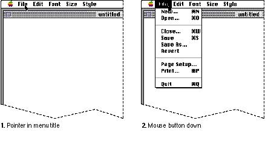
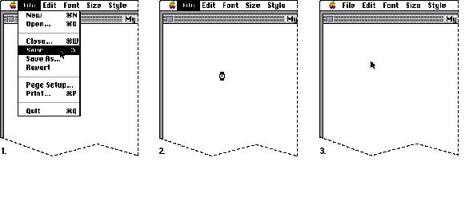

|
|
Menu BehaviorWhen people want to use menus on the Macintosh, they usually select an object and then choose a menu item. This behavior follows the paradigm of identifying what the user wants to act on and then specifying the action by choosing a menu item. To use a menu, the user first positions the pointer on a menu title and then presses the mouse button. While the mouse button is down, the application highlights the menu title and displays the menu. Nothing actually happens until the user chooses a menu item.Figure 4-6 shows an example of an open menu.  People can look at menus without having to complete any
action. To choose a command, the user drags the pointer down the list of menu items, and as the pointer appears over each item, it is highlighted. When the user releases the mouse button while an item is highlighted, the item blinks briefly, the menu disappears, and the operation associated with the menu item runs. You must continue to highlight the menu title until the operation is complete. |
|
|
While an operation generated by a menu item takes place, you need to provide feedback to the user about what is going on. You can display the animated watch cursor for immediate feedback if an operation will last only a short length of time. If the operation takes a bit longer, display a status dialog box to give the user more feedback about the operation under way. If an operation takes a long time, be sure to implement it asynchronously so that it can run in the background. After the operation is completed, return the menu title to the unhighlighted state. Figure 4-7 shows the use of a cursor change to provide feedback. |
|
Figure 4-7 A
feedback technique
 Keep in mind when you decide your timing issues that people have built-in expectations about how long they want to wait for an operation to be completed. Try to provide your users with feedback that lets them know that the computer is still working. Sometimes people may switch to a different application to do something else while waiting for the current operation in your application to finish. In this case, the user wouldn't see a cursor change, and it may be best to use a more visible form of feedback such as a status dialog box. The paragraphs that follow describe two situations in which different kinds of feedback were chosen based on the context and the users' expectations in each situation. When a Find operation lasts longer than approximately four seconds, the Finder displays a "Searching" message in a dialog box. For a Find operation, people typically want to do something with the target of the command, so they wait for its completion rather than go on to another task. If the search operation takes more than a few seconds, it's good to provide additional feedback that the search is taking place. When the user chooses Empty Trash, however, the Finder waits approximately eight seconds, about twice the amount of time for the Find operation, before displaying the "Emptying Trash" dialog box. The end result provides the user with a skinny receptacle and more disk space. Users may be willing to wait for a longer amount of time for the Trash to empty because they usually aren't waiting to do something with the result of the command. The previous paragraphs described typical behavior that occurs when a user chooses a menu item from a pull-down menu. In the case that a menu item displays a window that contains editable text, such as a modal dialog box, make the menu bar active and enable the Edit menu and other appropriate menus. Don't continue to highlight the menu title of the item that displayed the dialog box--as long as the user can use at least one of the menus, you shouldn't keep a title highlighted. |